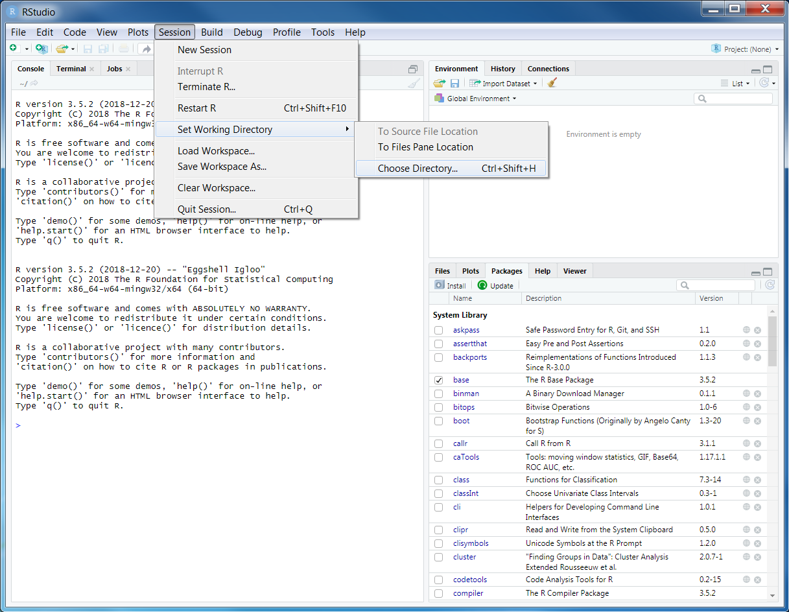
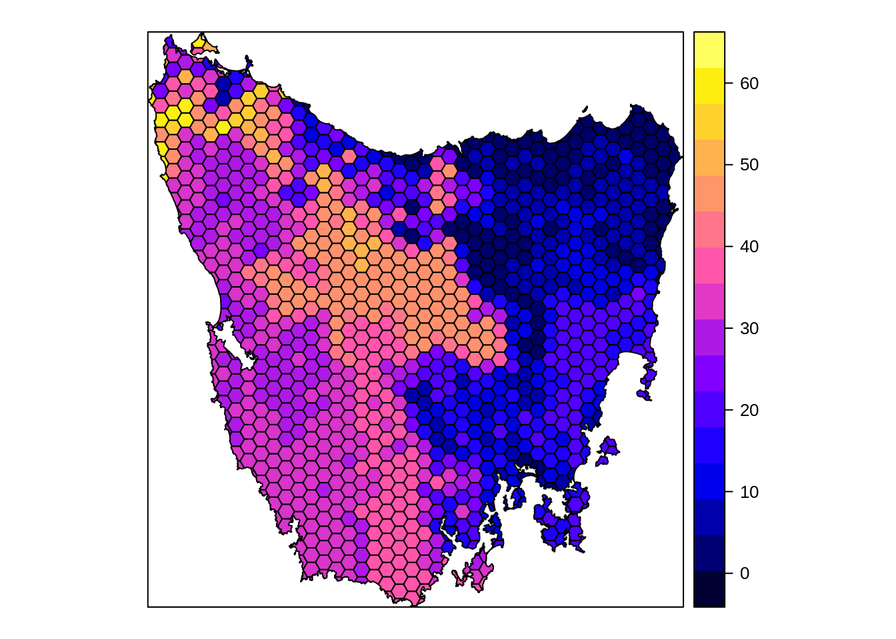
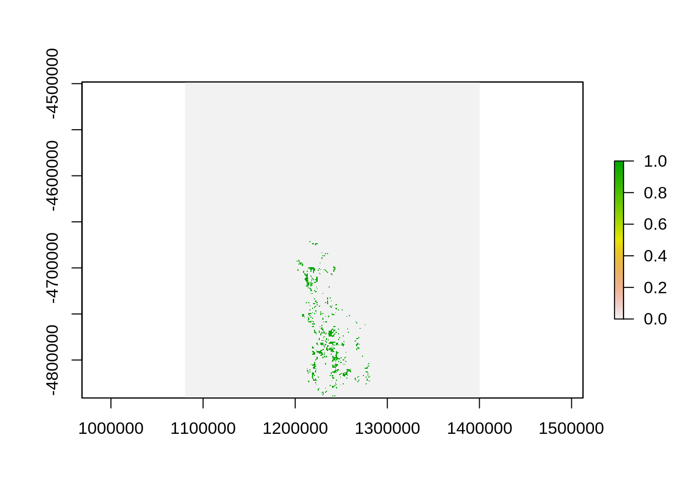

Chapter 4 Data
You should have already downloaded the data for the prioritizr module of this workshop. If you have not already done so, you can download it from here: https://github.com/prioritizr/PacMara_workshop/raw/master/data.zip. After downloading the data, you can unzip the data into a new folder. Next, you will need to set the working directory to this new folder. To achieve this, click on the Session button on the RStudio menu bar, then click Set Working Directory, and then Choose Directory.

Now navigate to the folder where you unzipped the data and select Open. You can verify that you have correctly set the working directory using the following R code. You should see the output TRUE in the Console panel.
file.exists("data/pu.shp")## [1] TRUE4.1 Data import
Now that we have downloaded the dataset, we will need to import it into our R session. Specifically, this data was obtained from the “Introduction to Marxan” course and was originally a subset of a larger spatial prioritization project performed under contract to Australia’s Department of Environment and Water Resources. It contains vector-based planning unit data (pu.shp) and the raster-based data describing the spatial distributions of 62 vegetation classes (vegetation.tif) in Tasmania, Australia. Please note this dataset is only provided for teaching purposes and should not be used for any real-world conservation planning. We can import the data into our R session using the following code.
# import planning unit data
pu_data <- readOGR("data/pu.shp")## OGR data source with driver: ESRI Shapefile
## Source: "/home/travis/build/prioritizr/PacMara_workshop/data/pu.shp", layer: "pu"
## with 1130 features
## It has 5 fields# format columns in planning unit data
pu_data$locked_in <- as.logical(pu_data$locked_in)
pu_data$locked_out <- as.logical(pu_data$locked_out)
# import vegetation data
veg_data <- stack("data/vegetation.tif")4.2 Planning unit data
The planning unit data contains spatial data describing the geometry for each planning unit and attribute data with information about each planning unit (e.g. cost values). Let’s investigate the pu_data object. The attribute data contains 5 columns with contain the following information:
id: unique identifiers for each planning unitcost: acquisition cost values for each planning unit (millions of Australian dollars).status: status information for each planning unit (only relevant with Marxan)locked_in: logical values (i.e.TRUE/FALSE) indicating if planning units are covered by protected areas or not.locked_out: logical values (i.e.TRUE/FALSE) indicating if planning units cannot be managed as a protected area because they contain are too degraded.
# print a short summary of the data
print(pu_data)## class : SpatialPolygonsDataFrame
## features : 1130
## extent : 1080623, 1399989, -4840595, -4497092 (xmin, xmax, ymin, ymax)
## crs : +proj=aea +lat_1=-18 +lat_2=-36 +lat_0=0 +lon_0=132 +x_0=0 +y_0=0 +ellps=GRS80 +units=m +no_defs
## variables : 5
## names : id, cost, status, locked_in, locked_out
## min values : 1, 0.192488262910798, 0, 0, 0
## max values : 1130, 61.9272727272727, 2, 1, 1# plot the planning unit data
plot(pu_data)# plot an interactive map of the planning unit data
mapview(pu_data)# print the structure of object
str(pu_data, max.level = 2)## Formal class 'SpatialPolygonsDataFrame' [package "sp"] with 5 slots
## ..@ data :'data.frame': 1130 obs. of 5 variables:
## ..@ polygons :List of 1130
## ..@ plotOrder : int [1:1130] 217 973 506 645 705 975 253 271 704 889 ...
## ..@ bbox : num [1:2, 1:2] 1080623 -4840595 1399989 -4497092
## .. ..- attr(*, "dimnames")=List of 2
## ..@ proj4string:Formal class 'CRS' [package "sp"] with 1 slot# print the class of the object
class(pu_data)## [1] "SpatialPolygonsDataFrame"
## attr(,"package")
## [1] "sp"# print the slots of the object
slotNames(pu_data)## [1] "data" "polygons" "plotOrder" "bbox" "proj4string"# print the geometry for the 80th planning unit
pu_data@polygons[[80]]## An object of class "Polygons"
## Slot "Polygons":
## [[1]]
## An object of class "Polygon"
## Slot "labpt":
## [1] 1289177 -4558185
##
## Slot "area":
## [1] 1060361
##
## Slot "hole":
## [1] FALSE
##
## Slot "ringDir":
## [1] 1
##
## Slot "coords":
## [,1] [,2]
## [1,] 1288123 -4558431
## [2,] 1287877 -4558005
## [3,] 1288177 -4558019
## [4,] 1288278 -4558054
## [5,] 1288834 -4558038
## [6,] 1289026 -4557929
## [7,] 1289168 -4557928
## [8,] 1289350 -4557790
## [9,] 1289517 -4557744
## [10,] 1289618 -4557773
## [11,] 1289836 -4557965
## [12,] 1290000 -4557984
## [13,] 1290025 -4557987
## [14,] 1290144 -4558168
## [15,] 1290460 -4558431
## [16,] 1288123 -4558431
##
##
##
## Slot "plotOrder":
## [1] 1
##
## Slot "labpt":
## [1] 1289177 -4558185
##
## Slot "ID":
## [1] "79"
##
## Slot "area":
## [1] 1060361# print the coordinate reference system
print(pu_data@proj4string)## CRS arguments:
## +proj=aea +lat_1=-18 +lat_2=-36 +lat_0=0 +lon_0=132 +x_0=0 +y_0=0
## +ellps=GRS80 +units=m +no_defs# print number of planning units (geometries) in the data
nrow(pu_data)## [1] 1130# print the first six rows in the attribute data
head(pu_data@data)## id cost status locked_in locked_out
## 0 1 60.24638 0 FALSE TRUE
## 1 2 19.86301 0 FALSE FALSE
## 2 3 59.68051 0 FALSE TRUE
## 3 4 32.41614 0 FALSE FALSE
## 4 5 26.17706 0 FALSE FALSE
## 5 6 51.26218 0 FALSE TRUE# print the first six values in the cost column of the attribute data
head(pu_data$cost)## [1] 60.24638 19.86301 59.68051 32.41614 26.17706 51.26218# print the highest cost value
max(pu_data$cost)## [1] 61.92727# print the smallest cost value
min(pu_data$cost)## [1] 0.1924883# print average cost value
mean(pu_data$cost)## [1] 25.13536# plot a map of the planning unit cost data
spplot(pu_data, "cost")
# plot an interactive map of the planning unit cost data
mapview(pu_data, zcol = "cost")Now, you can try and answer some questions about the planning unit data.
- How many planning units are in the planning unit data?
- What is the highest cost value?
- How many planning units are covered by the protected areas (hint:
sum(x))? - What is the proportion of the planning units that are covered by the protected areas (hint:
mean(x))? - How many planning units are highly degraded (hint:
sum(x))? - What is the proportion of planning units are highly degraded (hint:
mean(x))? - Can you verify that all values in the
locked_inandlocked_outcolumns are zero or one (hint:min(x)andmax(x))?. - Can you verify that none of the planning units are missing cost values (hint:
all(is.finite(x)))?. - Can you very that none of the planning units have duplicated identifiers? (hint:
sum(duplicated(x)))? - Is there a spatial pattern in the planning unit cost values (hint: use
spplotto make a map). - Is there a spatial pattern in where most planning units are covered by protected areas (hint: use
spplotto make a map).
4.3 Vegetation data
The vegetation data describes the spatial distribution of 62 vegetation classes in the study area. This data is in a raster format and so the data are organized using a square grid comprising square grid cells that are each the same size. In our case, the raster data contains multiple layers (also called “bands”) and each layer has corresponds to a spatial grid with exactly the same area and has exactly the same dimensionality (i.e. number of rows, columns, and cells). In this dataset, there are 62 different regular spatial grids layered on top of each other – with each layer corresponding to a different vegetation class – and each of these layers contains a grid with 343 rows, 320 columns, and 109760 cells. Within each layer, each cell corresponds to a 1 by 1 km square. The values associated with each grid cell indicate the (one) presence or (zero) absence of a given vegetation class in the cell.
Let’s explore the vegetation data.
# print a short summary of the data
print(veg_data)## class : RasterStack
## dimensions : 343, 320, 109760, 62 (nrow, ncol, ncell, nlayers)
## resolution : 1000, 1000 (x, y)
## extent : 1080496, 1400496, -4841217, -4498217 (xmin, xmax, ymin, ymax)
## crs : +proj=aea +lat_1=-18 +lat_2=-36 +lat_0=0 +lon_0=132 +x_0=0 +y_0=0 +ellps=GRS80 +units=m +no_defs
## names : vegetation.1, vegetation.2, vegetation.3, vegetation.4, vegetation.5, vegetation.6, vegetation.7, vegetation.8, vegetation.9, vegetation.10, vegetation.11, vegetation.12, vegetation.13, vegetation.14, vegetation.15, ...
## min values : 0, 0, 0, 0, 0, 0, 0, 0, 0, 0, 0, 0, 0, 0, 0, ...
## max values : 1, 1, 1, 1, 1, 1, 1, 1, 1, 1, 1, 1, 1, 1, 1, ...# plot a map of the 36th vegetation class
plot(veg_data[[36]])
# plot an interactive map of the 36th vegetation class
mapview(veg_data[[36]])# print number of rows in the data
nrow(veg_data)## [1] 343# print number of columns in the data
ncol(veg_data)## [1] 320# print number of cells in the data
ncell(veg_data)## [1] 109760# print number of layers in the data
nlayers(veg_data)## [1] 62# print resolution on the x-axis
xres(veg_data)## [1] 1000# print resolution on the y-axis
yres(veg_data)## [1] 1000# print spatial extent of the grid, i.e. coordinates for corners
extent(veg_data)## class : Extent
## xmin : 1080496
## xmax : 1400496
## ymin : -4841217
## ymax : -4498217# print the coordinate reference system
print(veg_data@crs)## CRS arguments:
## +proj=aea +lat_1=-18 +lat_2=-36 +lat_0=0 +lon_0=132 +x_0=0 +y_0=0
## +ellps=GRS80 +units=m +no_defs# print a summary of the first layer in the stack
print(veg_data[[1]])## class : RasterLayer
## band : 1 (of 62 bands)
## dimensions : 343, 320, 109760 (nrow, ncol, ncell)
## resolution : 1000, 1000 (x, y)
## extent : 1080496, 1400496, -4841217, -4498217 (xmin, xmax, ymin, ymax)
## crs : +proj=aea +lat_1=-18 +lat_2=-36 +lat_0=0 +lon_0=132 +x_0=0 +y_0=0 +ellps=GRS80 +units=m +no_defs
## source : /home/travis/build/prioritizr/PacMara_workshop/data/vegetation.tif
## names : vegetation.1
## values : 0, 1 (min, max)# print the value in the 800th cell in the first layer of the stack
print(veg_data[[1]][800])##
## 0# print the value of the cell located in the 30th row and the 60th column of
# the first layer
print(veg_data[[1]][30, 60])##
## 0# calculate the sum of all the cell values in the first layer
cellStats(veg_data[[1]], "sum")## [1] 36# calculate the maximum value of all the cell values in the first layer
cellStats(veg_data[[1]], "max")## [1] 1# calculate the minimum value of all the cell values in the first layer
cellStats(veg_data[[1]], "min")## [1] 0# calculate the mean value of all the cell values in the first layer
cellStats(veg_data[[1]], "mean")## [1] 0.0003279883# calculate the maximum value in each layer
as_tibble(data.frame(max = cellStats(veg_data, "max")))## # A tibble: 62 x 1
## max
## <dbl>
## 1 1
## 2 1
## 3 1
## 4 1
## 5 1
## 6 1
## 7 1
## 8 1
## 9 1
## 10 1
## # … with 52 more rowsNow, you can try and answer some questions about the vegetation data.
- What part of the study area is the 51st vegetation class found in (hint: make a map)?
- What proportion of cells contain the 12th vegetation class?
- Which vegetation class is present in the greatest number of cells?
- The planning unit data and the vegetation data should have the same coordinate reference system. Can you check if they are the same?